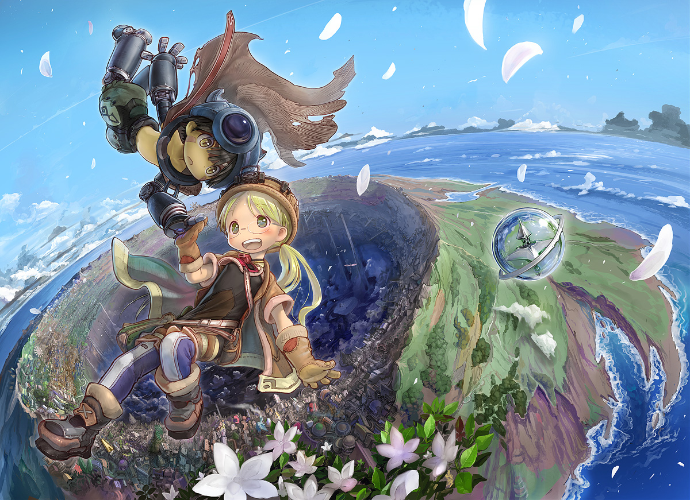

Les recommandations du Shoggoth
Made in Abyss
Voyage au centre de la terre, version japonaise
Diffusion : Eté 2017
Format : une saison de 13 épisodes (ici)
Genres : Science-Fiction, Aventure, Mystère, Drame, Fantastique
Synopsis :
L'Abysse, un gigantesque gouffre s'ouvrant jusqu'aux entrailles de la terre, et rempli de créatures mystérieuses et de reliques des temps jadis. Comment est-il apparu ? que se cache-t-il au fond ? D'innombrables courageux, les caverniers, l'ont bravé dans l'espoir fugace d'en découvrir les secrets, s'aventurant sans peur dans l'abîme sombre. Les meilleurs et plus braves caverniers, les Sifflet Blancs, sont acclamés comme des légendes par ceux restés à la surface.
Riko, fille du Sifflet Blanc disparu Lyza l'exterminatrice, aspire à suivre les traces de sa mère et explorer les tréfonds du gouffre. Cependant, étant une Sifflet Rouge novice, elle n'est autorisée qu'à fouiller dans les couches les plus hautes. Elle est tout de même amenée à rencontrer un robot amnésique étrange à l'apparence d'un jeune garçon, Reg. Certaine que les secrets de la technologie qui lui a donné vie réside au fond de l'Abysse, ils s'aventurent tous deux en direction du fond de l'abîme pour retrouver sa mémoire et voir de leurs yeux le fond de cet objet de fascination. Ils n'avaient pas tout à fait conscience des risques liés à un tel périple ...